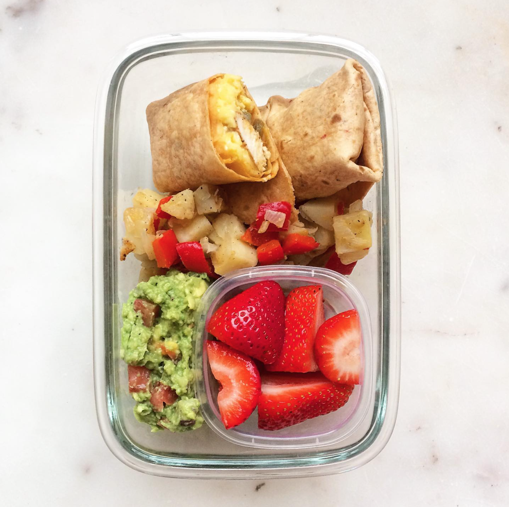

Chicken Brunch Burrito

Description
Courtesy of @thehealthfulhuman on Instagram
Serving Size: 2
Ingredients
- 8 oz. boneless skinless chicken breasts, cut into strips
- 4 eggs
- 1 tbsp. heavy cream
- 1/2 cup chihuahua (queso) cheese, shredded
- 1 tbsp. taco seasoning (see recipe)
- 2 flour burrito tortillas
- 1 tbsp. diced green chilis
- 1 tbsp. cooking oil
- 1/2 tbsp. butter
- 1/2 tsp. salt
Directions
- In a small bowl, scramble your eggs together with 1 tbsp. heavy cream and a dash of salt. In a medium sauté pan, heat ½ tbsp. butter and cook your eggs until al dente. Set aside.
- Mix your taco seasoning together. Coat the chicken strips in the seasoning. In a large sauté pan, heat 1 tbsp. cooking oil over medium heat. Cook the chicken 10-12 minutes, or until cooked throughout.
- Prepare two mini burritos by filling them each with: ½ chicken, ½ scrambled eggs, ¼ cup chihuahua cheese, and ½ tbsp. diced green chilis. Wrap tightly and set aside.